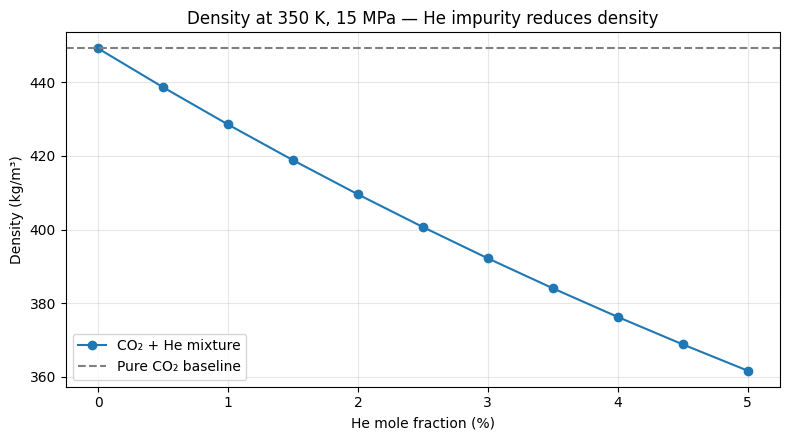

2. Impurity Mixture Effects#
2.1 Problem statement#
Adding even small amounts of helium or water vapour to the sCO₂ stream eliminates the single critical point and replaces it with a phase envelope: a dew-point and bubble-point curve that bound a two-phase coexistence region. Operating points that were safely supercritical for pure CO₂ may sit inside this envelope for the mixture.
For TMSR / HTGR coupling, helium ingress from the intermediate loop is plausible (the secondary side runs helium-cooled in some designs), and the shifted phase envelope must be detected before the cycle is committed to those operating conditions.
2.2 Mathematical description#
The Helmholtz-energy mixture model in CoolProp uses the GERG-2008 / HEOS formulation. For a binary CO₂–He mixture at composition \(x_{\rm He}\):
where \(\Delta\alpha^{r}\) is a binary departure function. The phase envelope is found by solving the equal-fugacity condition \(\hat{f}_i^L = \hat{f}_i^V\) at constant \(T\) and varying \(P\).
2.3 Code implementation — phase-state guard#
import sys
from pathlib import Path
_repo_root = next(
p for p in [Path.cwd(), *Path.cwd().resolve().parents]
if (p / "pyproject.toml").exists()
)
sys.path.insert(0, str(_repo_root / "src"))
from sco2_mixture_validation import calc_mixture_properties
# Compressor-inlet-like point: 35 °C, 8 MPa
result = calc_mixture_properties(T=308.15, P=8.0e6, x_he=0.0, verbose=False)
print(f"Pure CO2: rho = {result.rho_pure:.2f} kg/m³, Cp = {result.cp_pure:.0f} J/kg·K")
# 1% He impurity
result = calc_mixture_properties(T=308.15, P=8.0e6, x_he=0.01, verbose=False)
if result is None:
print("Mixture in two-phase region — engineering must avoid this point")
else:
print(f"1% He : rho = {result.rho_mix:.2f} kg/m³ "
f"(Δ {result.rho_delta_pct:+.2f}% vs pure)")
Pure CO2: rho = 419.09 kg/m³, Cp = 29594 J/kg·K
1% He : rho = 311.54 kg/m³ (Δ -25.66% vs pure)
2.4 Numerical sweep — density vs He fraction#
import numpy as np
import matplotlib.pyplot as plt
x_he_arr = np.linspace(0.0, 0.05, 11)
rho_pure = []
rho_mix = []
for x in x_he_arr:
r = calc_mixture_properties(T=350.0, P=15.0e6, x_he=float(x), verbose=False)
if r is None:
rho_pure.append(np.nan); rho_mix.append(np.nan)
else:
rho_pure.append(r.rho_pure); rho_mix.append(r.rho_mix)
fig, ax = plt.subplots(figsize=(8, 4.5))
ax.plot(x_he_arr * 100, rho_mix, "o-", label="CO₂ + He mixture")
ax.axhline(rho_pure[0], color="grey", linestyle="--", label="Pure CO₂ baseline")
ax.set_xlabel("He mole fraction (%)")
ax.set_ylabel("Density (kg/m³)")
ax.set_title("Density at 350 K, 15 MPa — He impurity reduces density")
ax.legend(); ax.grid(alpha=0.3)
plt.tight_layout()
plt.show()

2.5 Engineering implication#
He impurity lowers density — compressor mass flow drops at fixed volume flow
The phase envelope shifts upward in pressure at fixed temperature, so conditions that were single-phase for pure CO₂ may be two-phase for the mixture
Always run the phase guard before using mixture properties in any cycle-balance calculation — silent two-phase calls degrade cycle efficiency predictions
2.6 Known limitations#
HEOS binary parameters for CO₂–He are based on relatively sparse data; uncertainty rises sharply above 5 % He
Surface effects and mass-transfer kinetics within the cycle are not modelled — this is bulk thermodynamics only
2.7 References#
Kunz & Wagner (2012), J. Chem. Eng. Data — GERG-2008
Span & Wagner (1996) — the pure-CO₂ EOS basis for the departure function